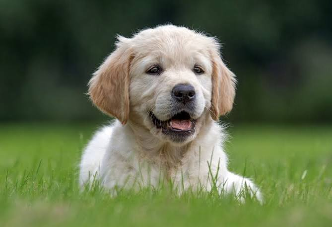
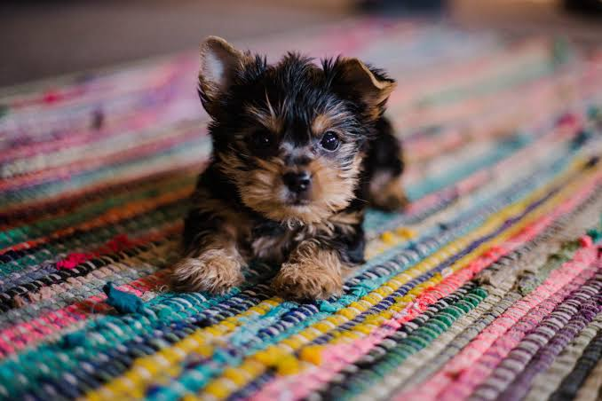
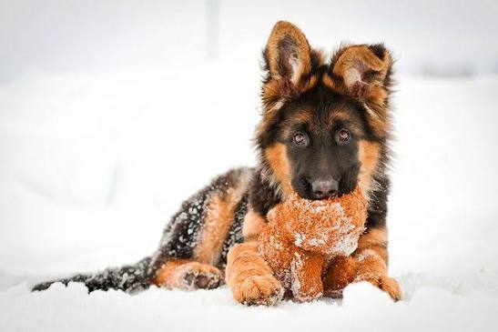

A háziállatok gondozása fontos feladat, amely sok figyelmet és felelősséget igényel. Minden állatnak más szükségletei vannak, ezért meg kell ismernünk, hogyan biztosíthatjuk számukra az egészséges és boldog életet.



A kutya társaságkedvelő állat, amelynek szüksége van mozgásra, játékra és rendszeres törődésre. A gazdájának gondoskodnia kell az egészségéről és a biztonságáról is.
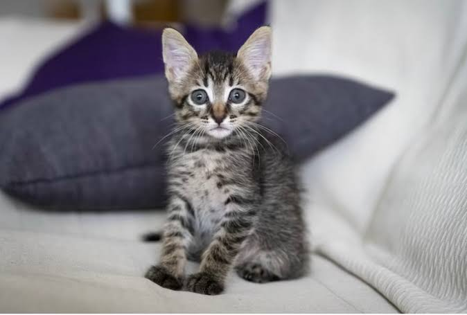
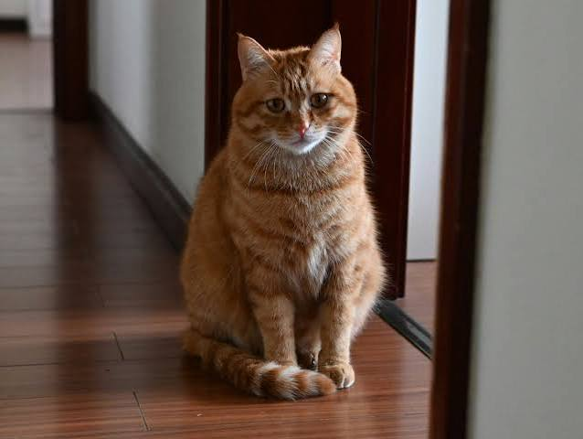
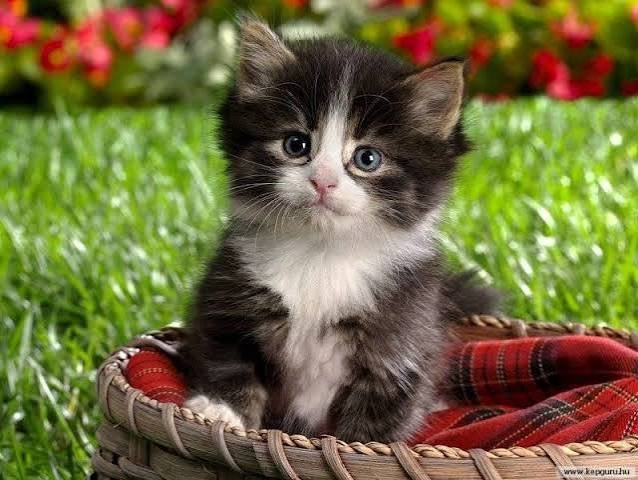
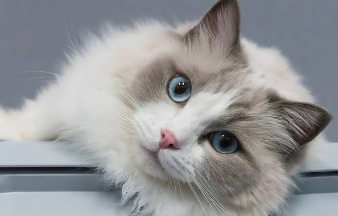
A macska önálló állat, de neki is szüksége van gondoskodásra. Fontos, hogy biztonságos helyen éljen, legyen lehetősége játszani, és mindig hozzáférjen a friss vízhez.
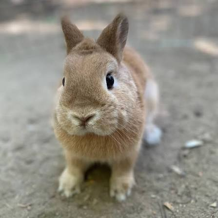
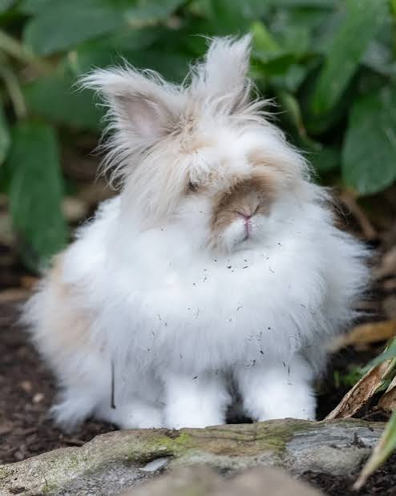
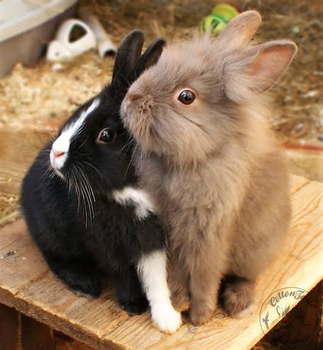
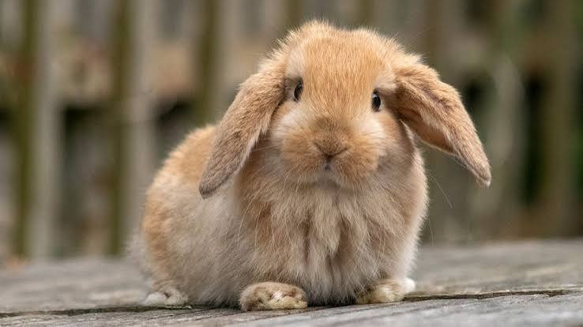
A nyúl érzékeny állat, ezért nyugodt környezetre és elegendő helyre van szüksége. Fontos, hogy naponta mozoghasson, és legyen egy biztonságos helye, ahol pihenhet.
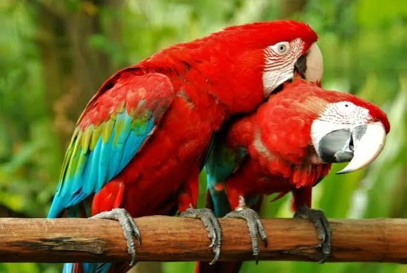
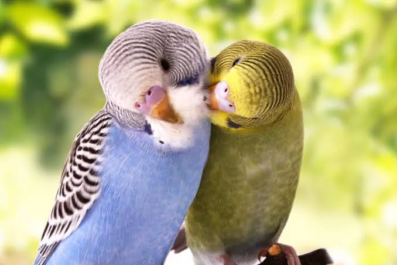
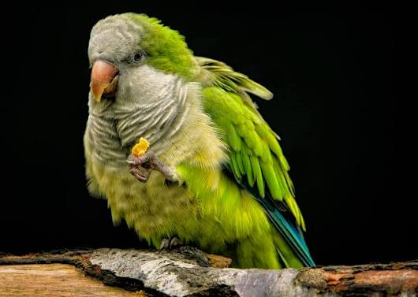
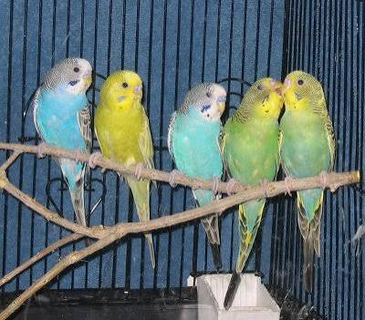
A papagáj intelligens és társaságkedvelő madár. Olyan környezetre van szüksége, ahol biztonságban van, mozoghat, játszhat, és megfelelő figyelmet kap.